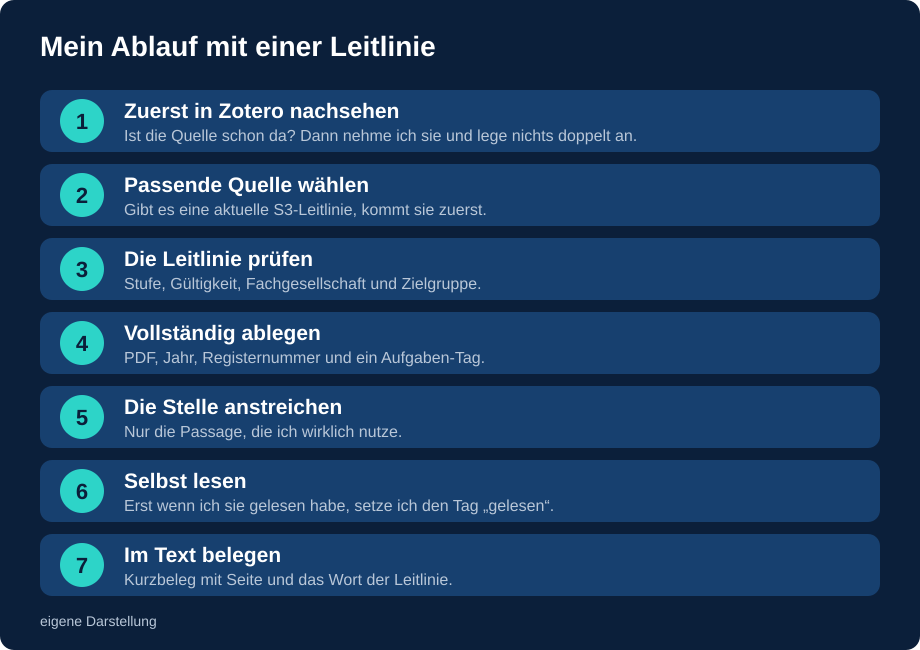
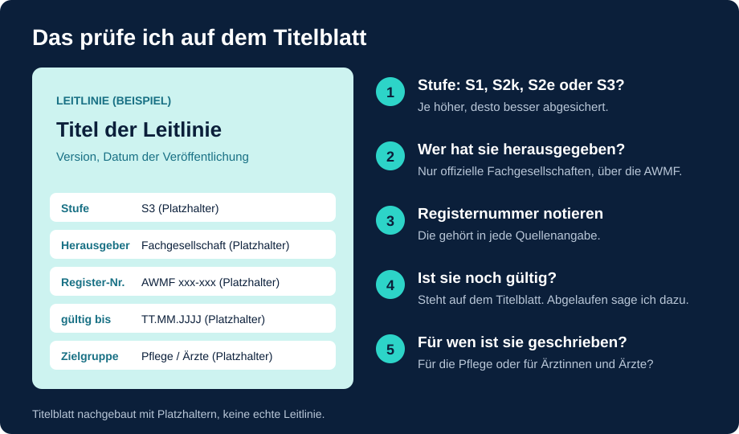
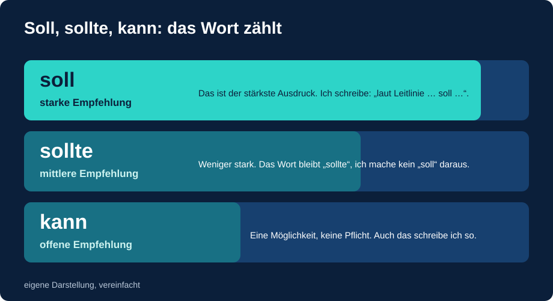
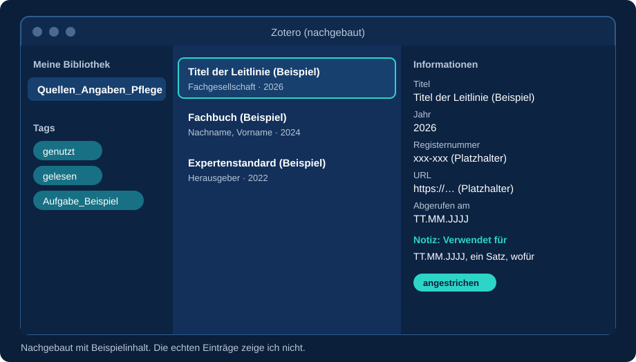
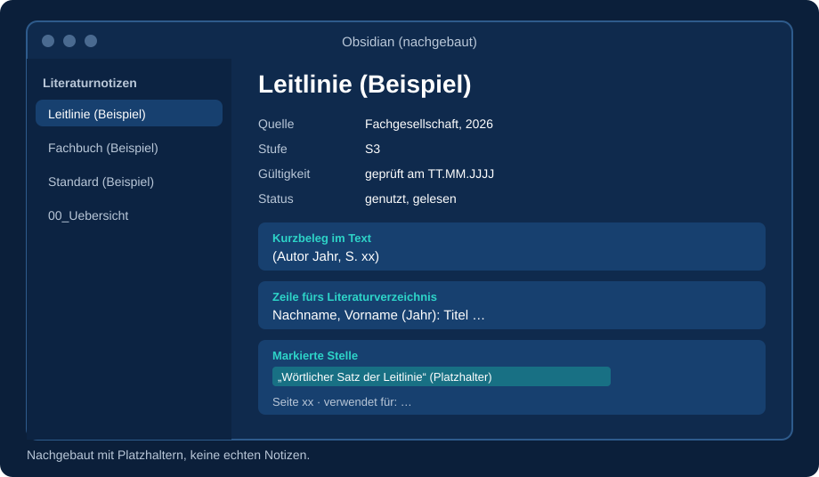

Ein PDF hier, ein Link da, irgendwo ein Screenshot: So landen Quellen schnell verstreut, und am Ende weiß man nicht mehr, welche Stelle man eigentlich gemeint hat. Deshalb habe ich mir einen festen Ablauf gebaut.
Dieser Beitrag zeigt genau diesen Ablauf. Erstens: Wie gehe ich mit einer Leitlinie um, bevor ich sie benutze? Und zweitens: Was passiert danach mit der Quelle, bis sie sauber in meinem Text steht? Es ist mein Weg, kein Standard, den es so irgendwo gibt.
Ich bin Auszubildender zum Pflegefachmann. Das hier ist ein Arbeitsbericht und keine Anleitung zum wissenschaftlichen Arbeiten.
Warum in diesem Beitrag keine Quellen stehen: Er beschreibt meinen eigenen Ablauf, also meine eigenen Regeln und meine Erfahrung damit. Es ist keine Fachaussage, die man mit einer Studie belegen müsste. Die Einordnung der Leitlinienstufen und der Empfehlungsgrade habe ich aus Unterrichtsmaterial meiner Ausbildung, das ich hier nicht veröffentlichen darf. Für Fachbeiträge auf diesem Blog gilt weiter: Dort stehen Quellen mit Seite im Text und im Verzeichnis.
- Der ganze Ablauf auf einen Blick
- Schritt 1 und 2: Erst nachsehen, dann die Quelle wählen
- Schritt 3: Die Leitlinie prüfen
- Soll, sollte, kann: Der Empfehlungsgrad
- Schritt 4: Vollständig in Zotero ablegen
- Schritt 5 und 6: Anstreichen und selbst lesen
- Obsidian: Die Notiz zur Quelle
- Schritt 7: Im Text belegen
- Wo mir die KI hilft und wo nicht
- In der Schule geht es ohne KI
- Was dieser Ablauf nicht kann
- Das Wichtigste in Kürze
Der ganze Ablauf auf einen Blick
Sieben Schritte, immer in derselben Reihenfolge. Das Bild zeigt sie, danach gehe ich jeden einzeln durch.

Schritt 1 und 2: Erst nachsehen, dann die Quelle wählen
Bevor ich irgendetwas neu suche, schaue ich in Zotero nach. Zotero ist ein Literaturverwaltungsprogramm, also ein Programm, in dem man seine Quellen sammelt, ordnet und daraus das Literaturverzeichnis erzeugen lässt. Bei mir liegt alles in einer einzigen Sammlung. Ist die Quelle schon da, nehme ich sie. Ich lege sie nie ein zweites Mal an, auch nicht als PDF und als Webseite oder als Vorabfassung und Endfassung.
Gibt es sie noch nicht, suche ich in einer festen Reihenfolge. Gibt es zum Thema eine aktuelle deutsche S3-Leitlinie, kommt sie zuerst. Danach folgen die anderen Leitlinien, Fachgesellschaften, Expertenstandards, Institutionen wie das RKI, Hochschulen und Fachbücher. Wikipedia, Foren und offene Mitmach-Seiten nehme ich nicht, auch nicht klein in einer Fußzeile. Und Google ist für mich eine Suchmaschine und keine Quelle: Angegeben wird die Seite, auf der die Information wirklich steht.
Schritt 3: Die Leitlinie prüfen
Eine Leitlinie ist eine Zusammenstellung von Empfehlungen, die Fachleute für eine bestimmte Situation erarbeitet haben. Sie soll helfen, im Alltag Entscheidungen zu treffen, ohne dass jede Pflegekraft oder jeder Arzt das Rad neu erfinden muss. Aber nicht jede Leitlinie ist gleich gut abgesichert. Deshalb schaue ich immer auf dasselbe, und zwar auf dem Titelblatt.

- Die Stufe. S1 ist ein Expertenkonsens, S2k ist konsensbasiert, S2e ist evidenzbasiert, S3 ist der Goldstandard. Je höher die Zahl, desto besser ist die Leitlinie abgesichert. Das nenne ich in meinen Texten dazu.
- Der Herausgeber. Ich nehme nur Leitlinien offizieller Fachgesellschaften. Gesucht wird über die AWMF, das ist die Dachorganisation der medizinischen Fachgesellschaften in Deutschland, bei der die Leitlinien gesammelt sind.
- Die Registernummer. Jede Leitlinie hat eine. Sie gehört in die Quellenangabe, damit man sie eindeutig wiederfindet.
- Die Gültigkeit. Auf dem Titelblatt steht, bis wann die Leitlinie gilt. Ist sie abgelaufen, schreibe ich das dazu. Ich zitiere sie dann nicht stillschweigend weiter.
- Die Zielgruppe. Ist sie für die Pflege geschrieben oder für Ärztinnen und Ärzte? Das ändert, wie ich eine Empfehlung lesen und einordnen muss.
Was ich nicht mache: eine Leitlinie aus dem Kopf datieren. Wenn ich das Jahr oder die Gültigkeit nicht nachgesehen habe, schreibe ich „noch zu prüfen“ und lasse die Lücke offen.
Soll, sollte, kann: Der Empfehlungsgrad
Das ist ein Punkt, den man leicht übersieht: In Leitlinien ist das kleine Wort wichtig, mit dem eine Empfehlung formuliert ist. „Soll“ ist eine starke Empfehlung, „sollte“ ist eine mittlere, „kann“ ist eine offene. Wer aus einem „kann“ in seinem Text ein „soll“ macht, behauptet etwas, was die Leitlinie so nicht sagt.

Deshalb tausche ich das Wort nie aus. Steht in der Leitlinie „sollte“, steht auch in meinem Text „sollte“. Und wenn ich in einer Pflegeplanung oder einem Fallbeispiel eine Maßnahme begründe, schreibe ich: laut Leitlinie soll oder sollte oder kann, mit Stelle und Seite.
Schritt 4: Vollständig in Zotero ablegen
Eine Quelle kommt nur in meine Sammlung, wenn die Angaben vollständig sind. Bei einer Leitlinie heißt das: Herausgeber, Titel, Jahr und Registernummer, dazu die Adresse und das Datum, an dem ich sie abgerufen habe. Fehlt etwas, ergänze ich es aus dem Dokument selbst. Geht das nicht, benutze ich die Quelle nicht.

Jeder Eintrag bekommt drei Dinge. Das Original-PDF als Anhang, das lege ich selbst ab. Ein Aufgaben-Tag, also ein Schlagwort für die Aufgabe, für die ich die Quelle brauche, zum Beispiel ein Kürzel mit Kurzthema. Und eine kurze Notiz „Verwendet für“ mit Datum und einem Satz, wofür. Dazu kommt der Tag „genutzt“, sobald die Quelle wirklich in einem Text steht. Alle Tags setze ich selbst. So finde ich in einem halben Jahr noch, warum ich etwas abgelegt habe.
Schritt 5 und 6: Anstreichen und selbst lesen
Ich markiere im PDF selbst nur die Stelle, die ich tatsächlich benutze, nicht das ganze Dokument. Dazu schreibe ich eine kurze Notiz, wofür ich sie brauche. Das gilt auch für Leitlinien mit mehreren hundert Seiten. So finde ich später genau die Zeile wieder, die ich im Text meine.
Jetzt kommt der Schritt, der mir am wichtigsten ist: Zitiert wird nur, was ich selbst gelesen habe. Den Tag „gelesen“ setze ich selbst und sonst niemand. Eine Quelle, die mir jemand oder etwas vorgeschlagen hat, ist für mich erst belegt, wenn ich die Stelle gelesen und verstanden habe. Das kostet Zeit. Aber ich muss verstehen, was ich schreibe. Ich trage Inhalte in der Schule vor, und ich muss sie Angehörigen und den Menschen, die ich pflege, verständlich erklären können. Das gelingt nur, wenn ich die Stelle selbst gelesen habe.
Obsidian: Die Notiz zur Quelle
Zu jedem Eintrag in Zotero gibt es eine Notiz in Obsidian, die beim Abgleich entsteht. Obsidian ist mein Programm für alle Notizen, dort liegt bei mir alles an einem Ort. Die Notiz enthält die Zeile fürs Literaturverzeichnis, den Kurzbeleg für den Text, die Angaben zur Prüfung und alle Stellen, die ich angestrichen habe. Ändere ich in Zotero etwas, zum Beispiel einen Tag oder eine angestrichene Stelle, zieht die Notiz nach.

Schritt 7: Im Text belegen
Jede Quelle steht an zwei Stellen: als Kurzbeleg im Text und mit vollständiger Angabe im Literaturverzeichnis am Ende, alphabetisch nach Nachnamen. Wörtliches steht immer in Anführungszeichen, und bei Büchern, Leitlinien und längeren Texten gehört die Seite dazu. Bei Internetquellen kommen die volle Adresse und das Abrufdatum dazu. Ich benutze im ganzen Text dieselbe Zitierweise.
Welche Zitierweise, hängt vom Ziel ab. Für die Pflegeschule gilt das Format, das die Schule vorgibt. Für alles andere, zum Beispiel Konzepte oder Fachtexte, nehme ich APA 7. Wenn nicht klar ist, wohin ein Text geht, frage ich vorher nach.
Und noch eine Regel, die mir wichtig ist: Die Quelle muss die Aussage wirklich belegen. Nur thematisch zu passen reicht nicht.
Wo mir die KI hilft und wo nicht
Ich arbeite viel mit KI, das habe ich in meinem Beitrag zum Workflow schon beschrieben. Bei den Quellen hat sie eine klar begrenzte Aufgabe. Sie schaut für mich nach, ob in meiner Zotero-Sammlung schon etwas Brauchbares zum Thema liegt, bevor ich neu suche. Außerdem gleicht sie Zotero und Obsidian miteinander ab: Meine angestrichenen Stellen und die Tags aus Zotero landen in der Notiz in Obsidian, ohne dass ich etwas von Hand übertragen muss.
Alles andere mache ich selbst. Ich lege das PDF ab, ich markiere die Stelle, ich lese sie, und ich setze die Tags, auch „gelesen“. Die KI nimmt mir die Sucharbeit und das Übertragen ab, aber sie entscheidet nicht, was als Quelle gilt. Und wenn der Abgleich einmal nicht geklappt hat, muss ich das sehen können und nicht einfach glauben, dass alles stimmt. Eine erfundene Quelle oder eine erfundene Seitenzahl wäre für mich der schlimmste Fehler.
In der Schule geht es ohne KI
Es gibt Aufgaben in der Schule, bei denen wir keine KI benutzen dürfen, gar nicht. Wenn die Vorgabe so lautet, halte ich mich daran. Dann mache ich jeden Schritt selbst: Ich suche die Leitlinie, prüfe das Titelblatt, lege das PDF ab, markiere die Stelle, lese sie, setze die Tags und schreibe den Beleg.
Das ist für mich kein Problem, denn ich habe mein System bewusst so aufgebaut, dass ich es auch ohne Hilfe bedienen kann. Jeder Schritt in diesem Beitrag lässt sich von Hand erledigen, die KI spart mir nur Zeit. Mir ist wichtig, alles dahinter zu verstehen. Wer nur auf ein Werkzeug vertraut, kann seine eigene Arbeit nicht mehr erklären, wenn das Werkzeug fehlt. Im Notfall muss ich alles selbst können, und mit diesem Ablauf kann ich das.
Was dieser Ablauf nicht kann
- Er ersetzt nicht das Lesen. Wer die Stelle nur anstreicht und nicht liest, hat nichts gewonnen.
- Er macht keine schlechte Leitlinie gut. Er hilft nur, sie als das zu erkennen, was sie ist: abgelaufen, für eine andere Zielgruppe oder nur ein Expertenkonsens.
- Er kostet am Anfang Zeit. Bei einer neuen Quelle ist es mehr Arbeit als ein schneller Link. Das zahlt sich erst später aus, wenn man etwas wiederfinden will.
- Er ist mein Weg. Andere kommen mit anderen Programmen und einem anderen Ablauf genauso gut zurecht.
Das Wichtigste in Kürze
- Erst in der eigenen Sammlung nachsehen, nichts doppelt anlegen.
- S3-Leitlinie zuerst, wenn es eine aktuelle gibt. Keine Wikipedia, keine Foren.
- Auf dem Titelblatt prüfen: Stufe, Herausgeber, Registernummer, Gültigkeit, Zielgruppe.
- Das Wort der Leitlinie nicht austauschen: soll, sollte, kann.
- Nur vollständige Quellen ablegen, die benutzte Stelle anstreichen und selbst lesen.
- Im Text immer Kurzbeleg mit Seite, am Ende das Verzeichnis.
- Jeden Schritt selbst machen können: In der Schule geht es auch ohne KI.
Wenn du einen anderen Weg hast, mit Quellen und Leitlinien zu arbeiten, schreib mir gern.